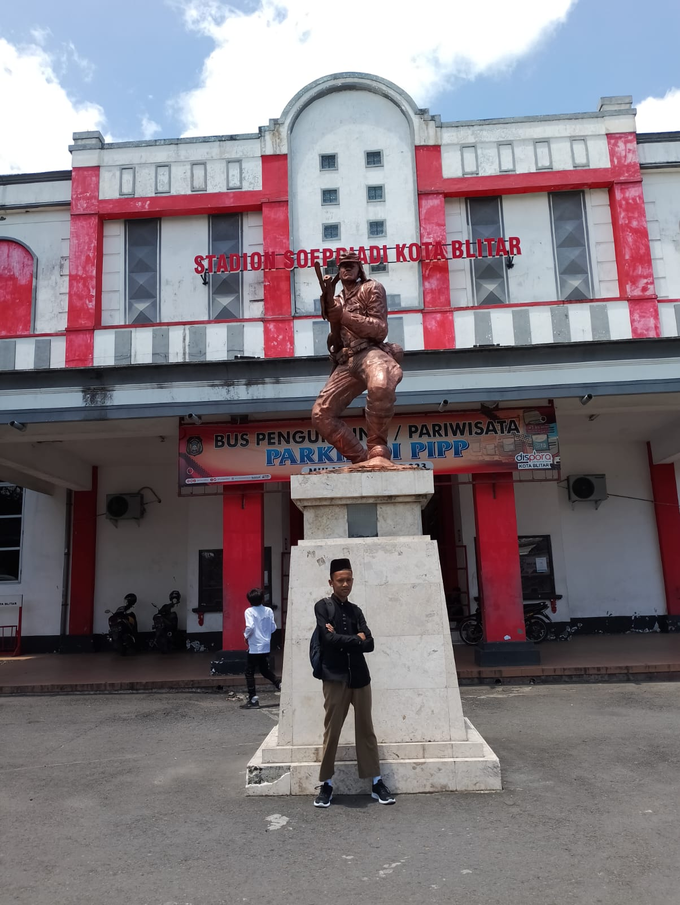

Data Diri Saya
Nama: Mohamad Zulfa Zakariya
Tempat, Tanggal Lahir: Blitar, 17 Juni 2008
Umur: 16 Tahun
Anak Ke: Anak pertama dari keluarga
Sekolah: SMKN 1 NGLEGOK, Kelas XI TEI 2
Pendidikan Sebelumnya:
- TK Alhidayah Sukosewu 04
- MI Sabilul Muttaqin 02
- MTS Ma'arif NU Gandusari
Hobi: Bermain Bola dan Coding
Pengalaman Proyek
- Membuat sistem kontrol lampu jarak jauh menggunakan teknologi IoT.
- Melakukan monitoring kualitas air dengan sensor TDS dan pH menggunakan Arduino dan NodeMCU.
- Proyek Smart Home dengan kontrol jarak jauh untuk perangkat seperti lampu dan AC.
- Proyek pendeteksi kelembapan tanaman menggunakan sensor kelembapan tanah untuk memastikan kondisi tanaman tetap optimal.
Foto Saya
